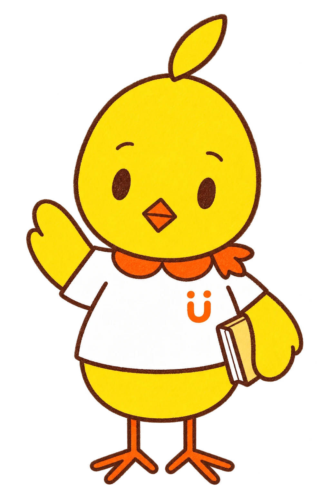
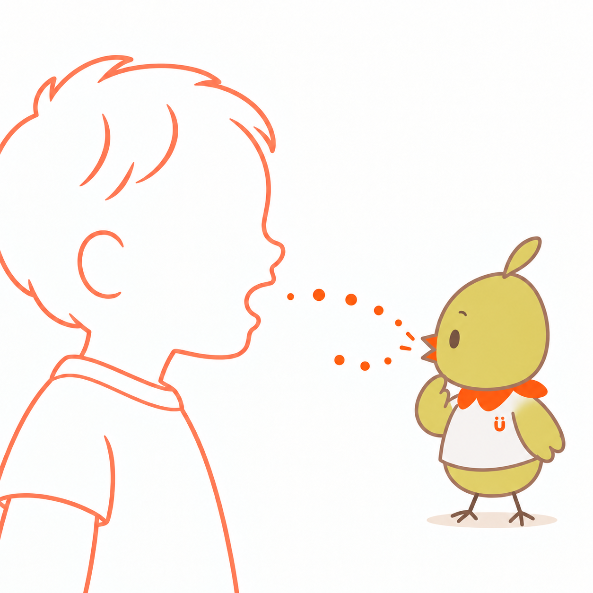
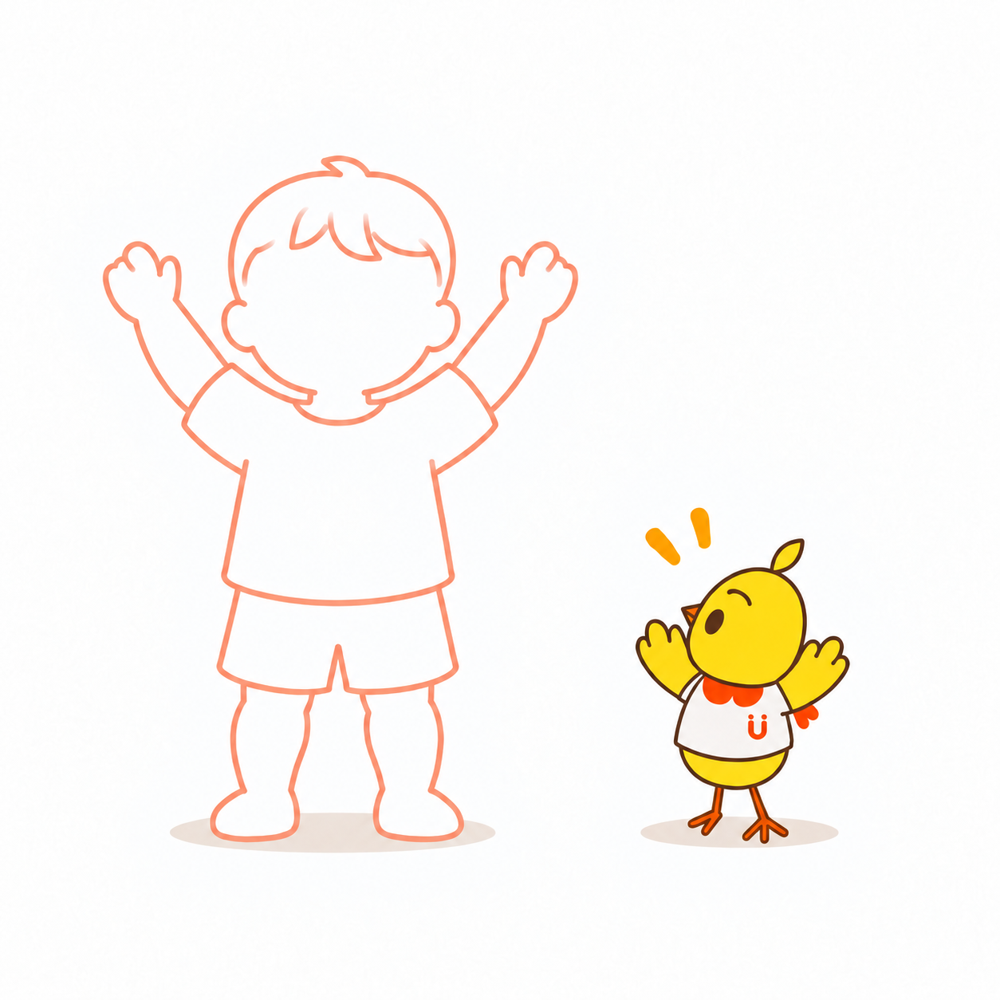
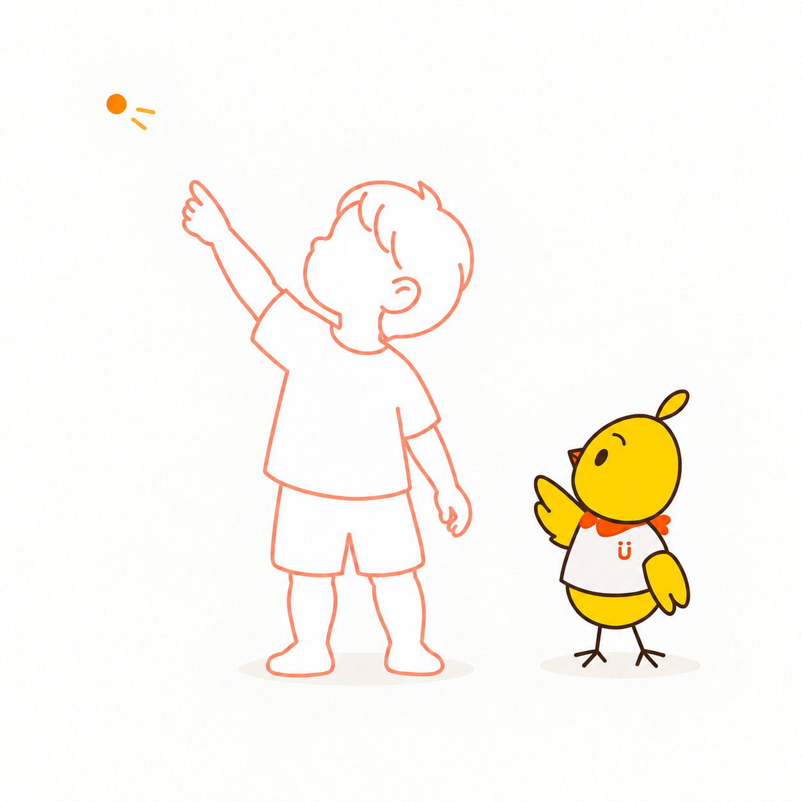
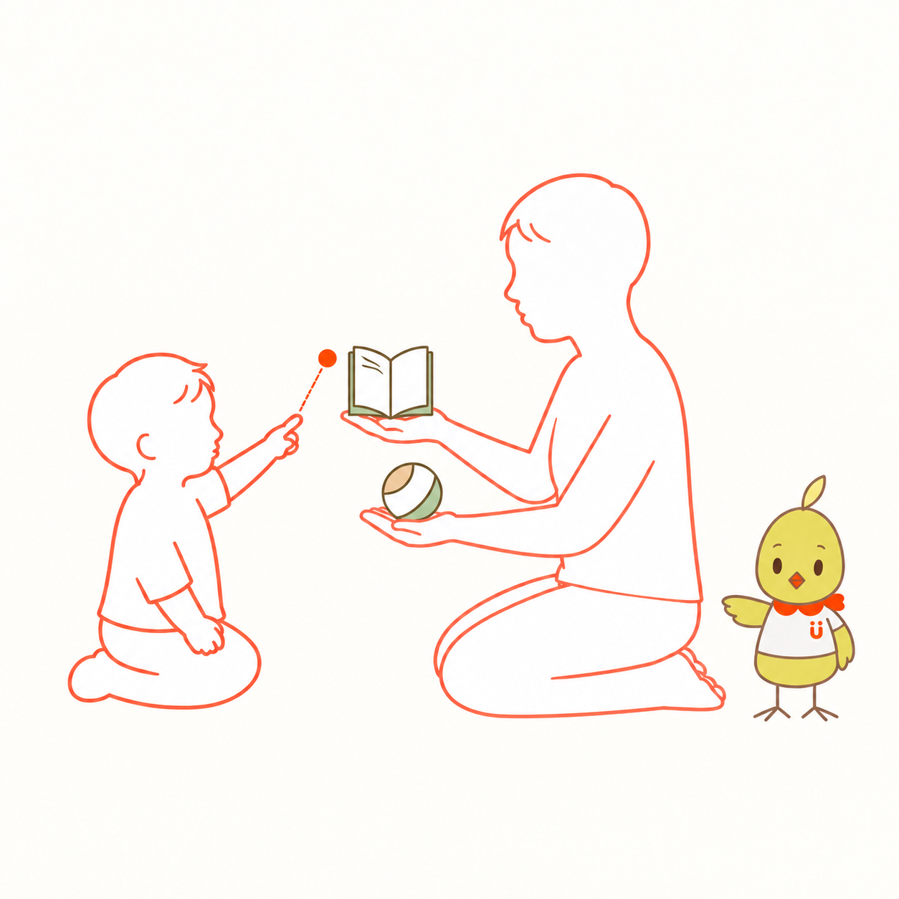
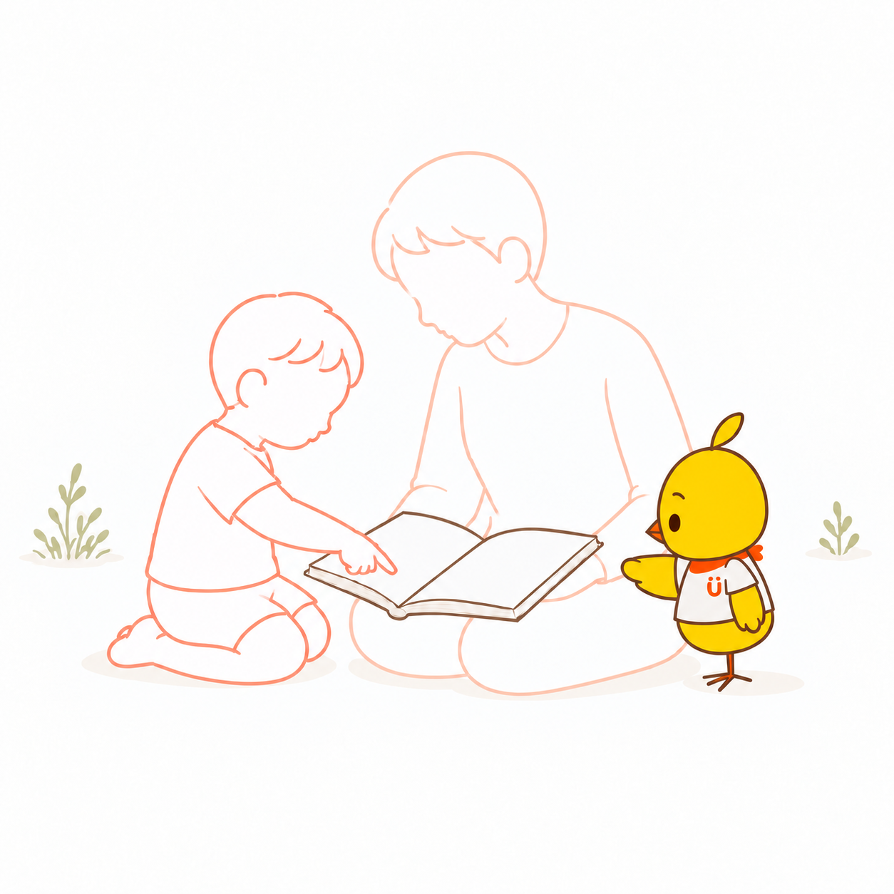
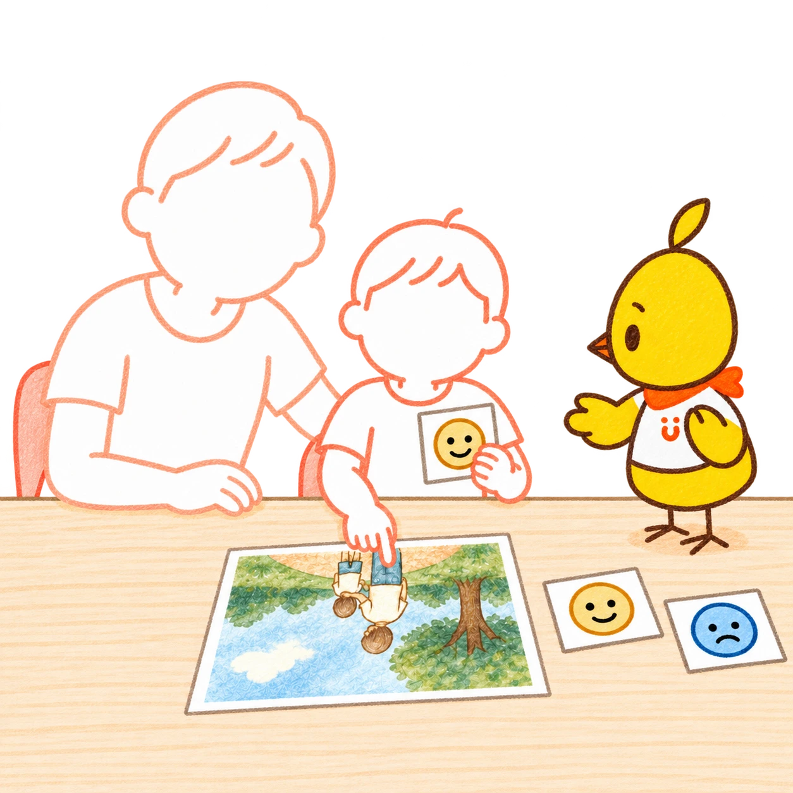
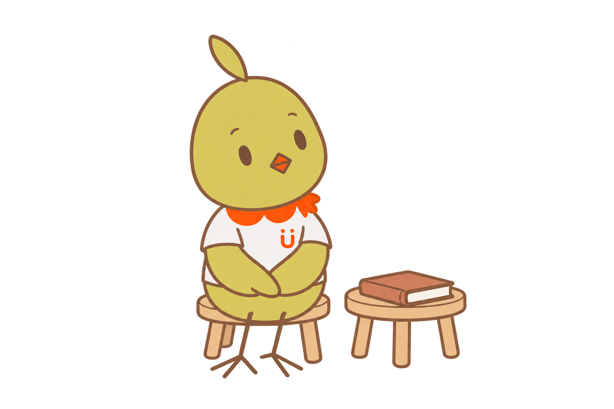
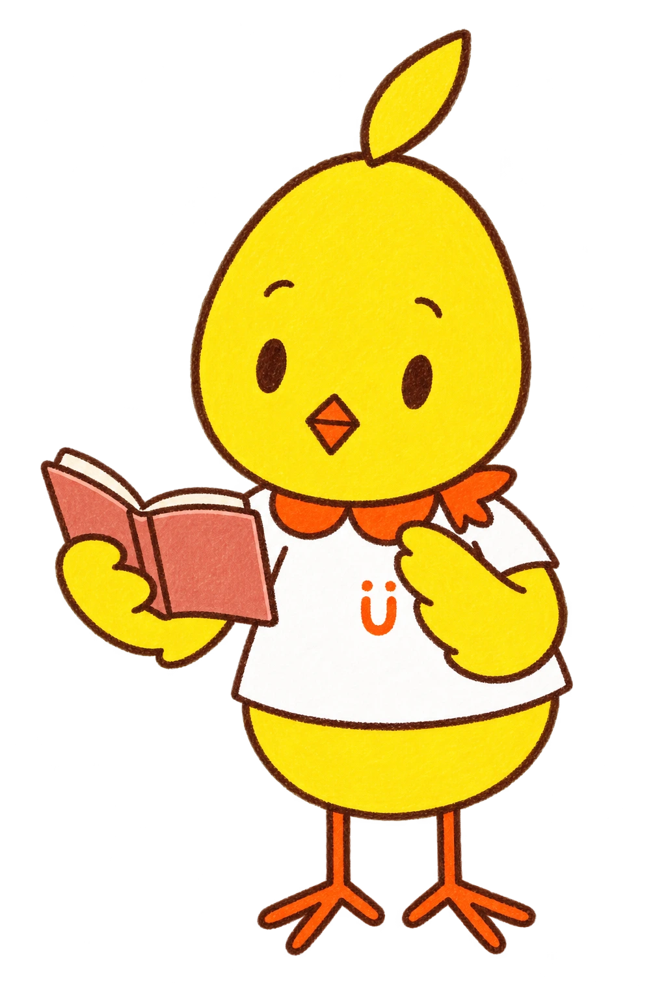

01
うたうの、だいすき。
おしゃべりも、すき。
でもね、
きみの おはなしが はじまると、
もっと 聞きたく なっちゃう。
02
いろんな おはなし、
聞こえてくるよ。
きみが「あー」。
わたしも「あー」。

こんどは「うー」。
わたしも「うー」。
ふふ。声が いったり、きたり。
03
きみが ばんざい。
わたしも ばんざい。
その うごき、おもしろいね。
もういっかい、やってみよう。

ふふ。おんなじだね。
04
ゆびでも、おはなし
してくれるんだね。
どこ、どこ？

ああ、ここを 見てたんだ。
そうか、そうか。
わたしも 見つけたよ。
05
どっちに する？
絵本と ボールが、ならんだよ。
きみの ゆびが、絵本へ。

これが いいんだね。
いっしょに 読もう。
06
ページを ひらくと。
きみの ゆびが、ぴたっ。
ああ、そこに なにか いたんだね。

わたしも 見たくて、
つい、近づいちゃう。
07
こんどは、
きみの おはなし。
写真も 見せてくれた。
「それで？」「そのあと？」

……おっと。
きみは、まだ 伝えている とちゅう。
わたしは、ちょっと 待とう。
08
おはなしの あとは、
もういちど 絵本。
わたしは、のんびり 待っていた。
絵本は、まだ 閉じたまま。

あれ？
きみも、待ってるの？
読むんだった！

09
ふふ。
待ちすぎちゃった。
わたしが 読むのを、
待っていて くれたんだね。
絵本を ひらいて――
では、はじまり はじまり。
10
わたしの おはなし、
聞いてくれて ありがとう。
声でも、ゆびでも、しぐさでも。
きみの おはなし、
また 聞かせてね。
おはなしの あとに
ことばになる前の「伝えたい」も、
いっしょに。
Mimoは、子どもが大好き。声をまねしたり、同じものを見つけたり、一緒に笑ったり。そんなやりとりがうれしくて、もっと知りたくなります。声も、視線も、仕草も、その子の気持ちに出会う入り口です。
「いつ、お話ししてくれるかな」。待ち遠しくて、焦る日もあります。そんなときは、言えたことばだけでなく、こちらを見たこと、指で教えてくれたこと、一緒に楽しめたことにも目を向けてみませんか。ことばの育ちには、それぞれの時間があります。今日の小さなやりとりも、大切なひとときです。
Mimoは、ちょっとのんきに見えるかもしれません。でも、一緒に笑ったこと、声をかけ合ったこと、その一つひとつが、その子らしい「伝えたい」の芽を育むと信じています。小さな応答を見つけるたびに、うれしくなるMimo。「今日は、こんなお話ができたね」。そんな喜びを、子どもとも、おうちの人とも、分かち合っていきたいのです。
HugMap Stories · Mimoの自己紹介